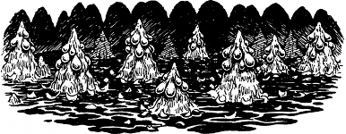

209
With Prince Leomin watching your back, you cautiously explore this stinking hive. Beyond the cocoons you come to an adjoining cavern where a rough stone ramp descends to a sunken floor, ankle-deep in brackish slime. Clusters of large grey eggs are attached to conical stalagmites, and the surface of the mire is littered with the remnants of these leathery grey sacs. Your Kai Sixth Sense tells you that these torn egg pouches once contained the creatures that are now wreaking havoc in the dwarven kingdom.
{kind=link}

You approach the edge of the stone ramp and come to an abrupt halt when you detect an overpowering aura of evil. You cast your eye across the field of stalagmites and your blood runs cold when you catch your first glimpse of Shom’zaa lurking in the darkness. He is a four-legged being, and his great head is triangular in form. Two pale green, radiant eyes are set above a three-cornered mouth filled with crystalline fangs. Below his jaw protrudes a slender proboscis, and from the crown of his bony skull sprout antenna tipped with barbed spikes. Slime drips from his every pore, sheening his leprous hide.
At first Shom’zaa appears not to have sensed your presence in his lair. Busily he tends to a batch of Agarashi eggs, injecting them with fluid from his proboscis to encourage them to hatch. But when you remove the Sun-crystal from your pocket and get ready to hurl it at his loathsome form, suddenly he senses danger and retreats among the stalagmites. As he withdraws, he emits a sound that is beyond the range of human hearing.
If you possess Kai-screen and wish to use it, turn to 224.
If you possess Bardsmanship and wish to use it, turn to 133.
If you do not possess these skills, or if you choose not to use them, turn to 46.